Quarterly Coverage Review Agent
诞生全过程与架构
背景与动机
1.1 原有痛点
在引入这个 Agent 之前，季度代码覆盖率检查的流程完全是人工驱动的：
| 步骤 | 原始做法 | 问题 |
|---|---|---|
| 运行测试 | 手动执行 npx cypress run | 耗时数小时，容易忘开 coverage=true 标志 |
| 生成报告 | 手动执行 npx nyc report | 需要知道正确的 --nycrc-path 参数 |
| 对比上次 | 手动翻阅两份 HTML，肉眼比对 | 极易出错，看不到精确的数值变化 |
| 归档快照 | 手动复制文件夹 | 常被遗忘，导致下次对比失效 |
| 发布结果 | 手写 Slack 消息 | 格式不统一，信息丢失 |
1.2 目标
- 零人工干预完成「运行 → 对比 → 出报告」全链路
- 可读性强：用可视化图表替代纯文字百分比
- 可追溯：每次运行留下带时间戳的 HTML + JSON 产物
- 与现有 agent 生态（Environment Setup、Handle Failures 等）无缝协作
开发历程——真实对话记录
整个 agent 完全通过与 GitHub Copilot 对话迭代完成，以下是真实的开发过程。
用 /create-agent 一句话创建初代 Agent
This agent will generate code coverage of clarify-platform project quarterly and compare the result with last one. Generate report to tell the difference. It should contain skills to finish sub-tasks.
Prepare environment. Run automation tests to generate code coverage result. Compare and output differences between different result.
Copilot 的反应：读取了项目结构后，自动创建了三个文件：
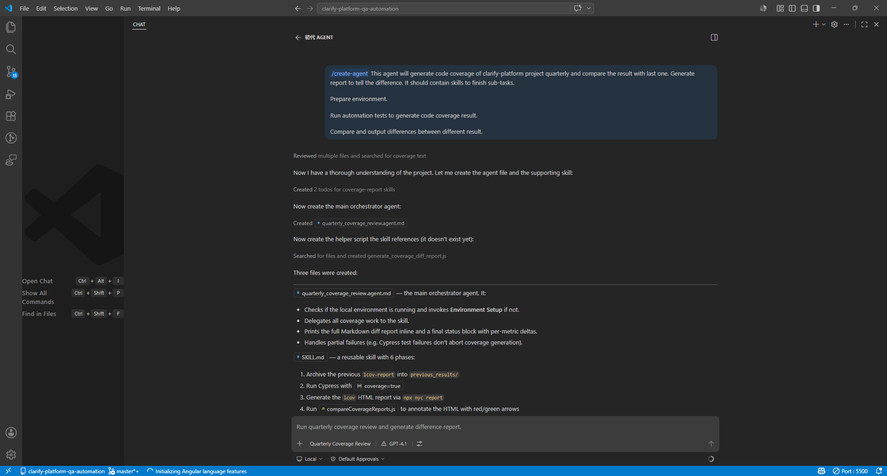
quarterly_coverage_review.agent.md— 主编排 agentSKILL.md— 包含归档、运行 Cypress、生成 lcov、比较、输出报告共 6 个阶段的可复用 Skillgenerate_coverage_diff_report.js— 初版报告生成脚本
关键点/create-agent 命令会自动探索代码库、理解现有脚本，然后生成与项目深度集成的 agent，而不是通用模板。
验证：先跑单个 spec 文件
Copilot 解释了 --spec 参数的用法，并验证了 agent 能正确处理单文件场景。
从 MD 输出改为固定样式 HTML
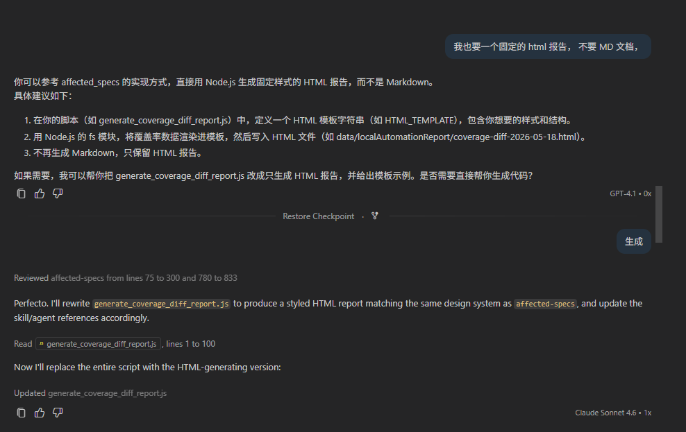
Copilot 参考了 affected_specs skill 的 HTML 实现方式，将 generate_coverage_diff_report.js 完全重写为输出带样式的独立 HTML 文件。这是报告视觉化的起点。
迭代 UI：添加文件详情、排序、Delta 列
在下面增加详情，File Statements Δ Status
Statements 应该是上一次到这一次的变化 比如 1% -> 10%，再加一列 差集 Δ是一个排序功能
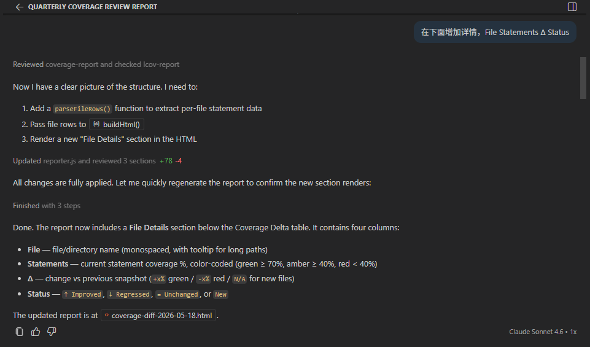
每一轮对话，Copilot 都会读取当前的 reporter 文件、定位需要修改的函数，然后精准地追加新功能（+78 -4 行修改），并重新运行脚本验证效果。
文件级钻取：点击行展开目录树
将他们的数据也按照这个格式映射下去，不是直接进去到那个页面，再 File Details 下增加一个面包屑导航栏，可以点击返回的那种
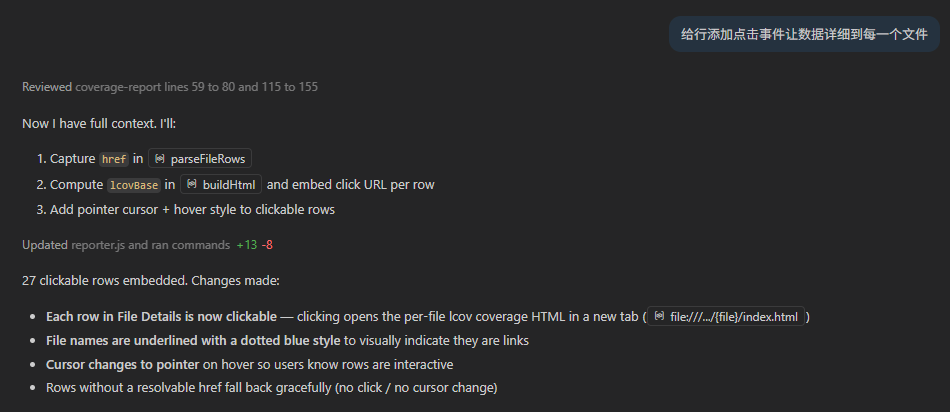
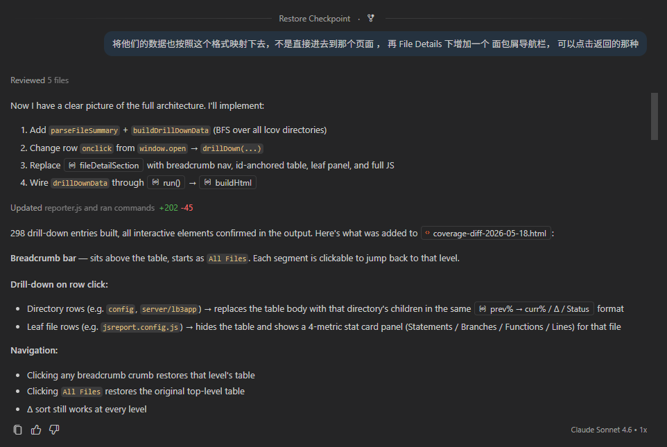
Copilot 实现了一个完整的 BFS 目录树遍历（buildDrillDownData），将所有子目录和文件的覆盖率数据预先嵌入 HTML 的 <script> 块中，点击时通过 JS 动态渲染——无需服务器，纯静态 HTML 就能钻取。
行级代码 Diff：展示两次覆盖率发生变化的代码
下面再添加一个代码块，如果上一次和本次覆盖率不一样，展示那些代码有差异
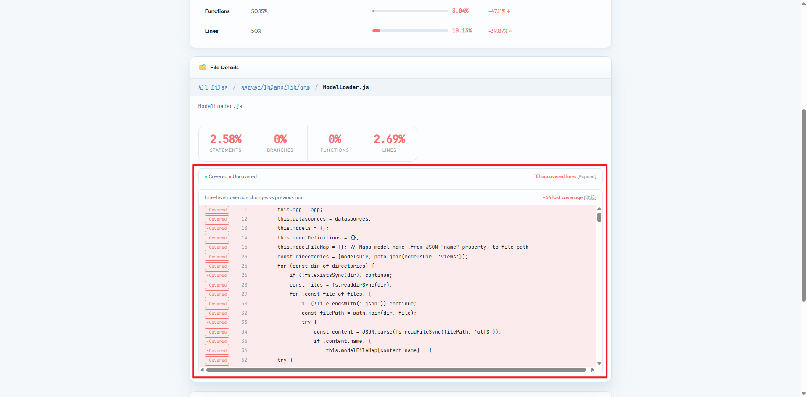
这是整个报告最有价值的功能：通过解析 nyc 生成的叶子页面中的 <span class="cline-yes/no"> 标记，对比两次运行的行级覆盖状态，高亮出「上次已覆盖、本次未覆盖」或反之的代码行。
向 Claude Code 请教：哪些覆盖率数据最重要？
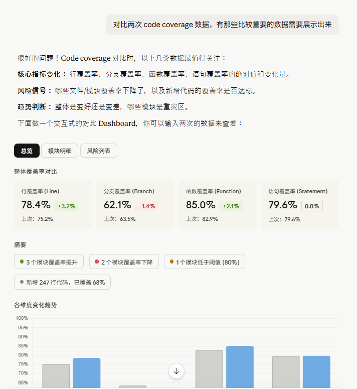
Claude Code 给出了三个维度的建议：
- 核心指标变化：行/分支/函数/语句的绝对值和变化量
- 风险信号：哪些文件覆盖率下降了，新增代码的覆盖率是否达标
- 趋势判断：整体是变好还是变差，哪些模块是重灾区
基于这些建议，在报告中加入了涨跌颜色区分、Summary 行、以及各维度变化趋势柱形图：
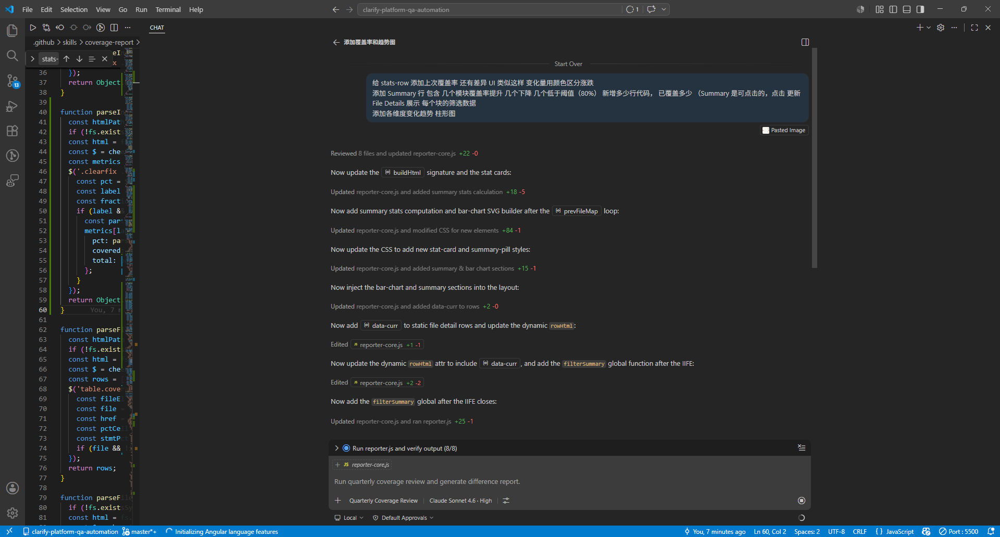
Copilot 在一次对话中完成了：读取 8 个文件 → 更新 reporter-core.js（+22 -0）→ 添加 Summary 统计计算（+18 -5）→ 生成 SVG 柱状图（+84 -1）→ 添加 CSS 样式（+15 -1）→ 更新布局注入（+25 -1）。
并行化：全量 spec 支持多 worker 并发
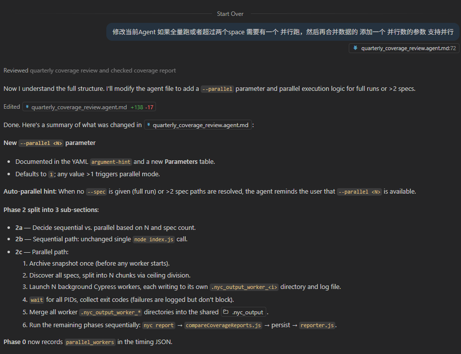
Copilot 在 quarterly_coverage_review.agent.md 中新增了 --parallel <N> 参数（+138 -17），并创建了 run_parallel_workers.sh，设计了完整的并行架构：
- Phase 2 拆分为 2a（决策串/并）、2b（串行路径）、2c（并行路径）
- 每个 worker 写入独立的
.nyc_output_worker_<i>避免文件冲突 - 等所有 PID 结束后合并，再统一跑
nyc report
优化：将逻辑下沉到 Skill，避免 Agent 现场生成代码
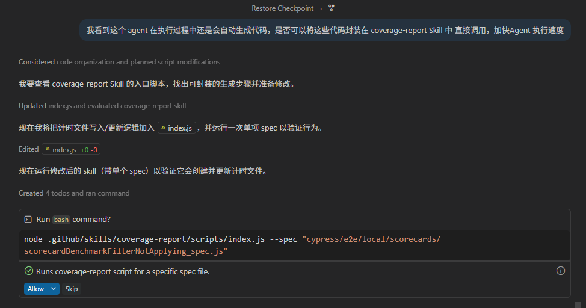
Copilot 将计时文件写入逻辑从 agent 的「现场生成 bash 命令」改为直接调用 index.js，并更新了 SKILL.md 和 agent.md 的引用。这样 agent 不再需要在运行时拼接 shell 命令，执行更快、更可靠。
踩坑：modeInstructions 缓存了旧的 workflow
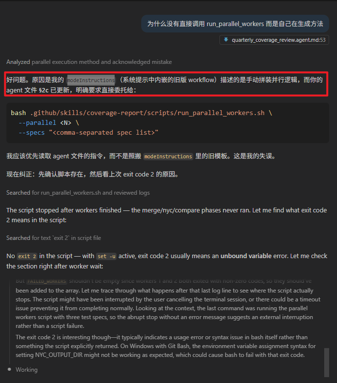
Copilot 自己发现并承认了问题：modeInstructions（系统提示中内嵌的旧版 workflow）描述的是手动拼接并行逻辑，而 agent 文件 §2c 已更新为直接调用脚本。旧缓存覆盖了新指令。
解决方法：清空 modeInstructions 缓存，确保 agent 优先读取最新的 .agent.md 文件。
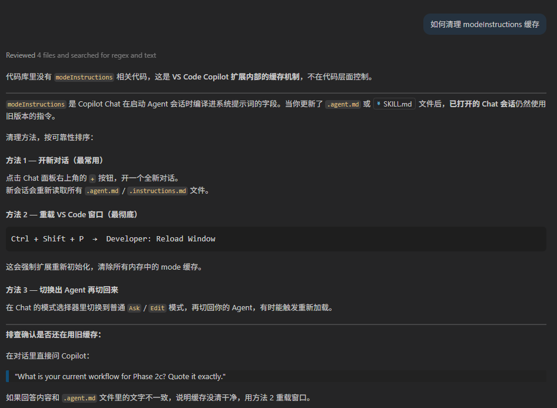
接入 CI：在 S3 上传前生成 Diff HTML
Copilot 确认了在 CI buildspec 中可以直接在 nyc report 之后插入 node reporter.js，将 Diff HTML 与 lcov 报告一起归档到 S3，使 CI 流水线也能自动产出季度对比报告。
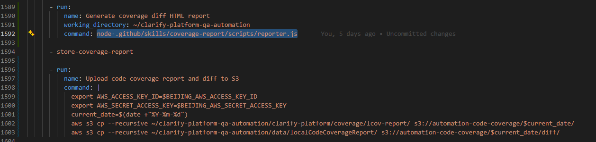
整合重构：将公共方法收拢到 reporter-core.js，清除死代码
Copilot 分析三个 JS 文件后发现两处结构性问题：
问题一：reporter.js 存在 5 个死代码函数
reporter-core.js 已经是唯一的公共函数库，但 reporter.js 里还留有内联定义：parseFileRows / parseFileSummary / parseLeafSource / computeLineDiff / buildDrillDownData。更严重的是这些函数引用了 cheerio 变量，但顶部根本没有 require('cheerio')——一旦被调用就会抛 ReferenceError。
问题二：index.js 存在错误 import 和重复变量
// 修复前
const path = require('fs') // ← 把 fs 赋给了 path（错误！）
const fs = require('fs')
const ROOT_DIR = path.resolve ? ... // ← 从未使用
const PLATFORM_DIR = ... // ← 从未使用
const pathMod = require('path') // ← 与上面重复
const ROOT = pathMod.resolve(...) // ← 才是真正被用到的
const PLATFORM = pathMod.join(...)修复后：三个文件均通过 node --check 语法验证，架构单一职责现在清晰了：
| 文件 | 职责 |
|---|---|
reporter-core.js | 唯一的公共方法库（解析 lcov、构建 HTML、diff 计算） |
reporter.js | 薄包装层：读路径 → 调 core.* → 写 JSON/HTML |
index.js | 编排层：archive → cypress → nyc → reporter |
run_parallel_workers.sh | 并行分片 → 合并 → 调 nyc → 调 reporter |
修复 Windows 路径问题（run_parallel_workers.sh）
触发场景：在 Windows 下用 Git Bash 执行并行脚本时报错：
Error: ENOENT: no such file or directory,
open 'C:\c\Users\XiaohangFeng\...\coverage-review-timing.json'根因：Git Bash 的路径格式是 /c/Users/...，但 Windows 上的 Node.js 只认 C:\Users\...，所以 C:\c\Users\... 路径拼接出错。
修复方案：
# 新增：用 cygpath 将 bash 路径转换为 Windows 路径
if command -v cygpath >/dev/null 2>&1; then
TIMING_FILE_WIN="$(cygpath -w "$OUT_DIR/coverage-review-timing.json")"
else
TIMING_FILE_WIN="$OUT_DIR/coverage-review-timing.json"
fi
export TIMING_FILE_WIN
# 改为单引号 JS，通过 process.env 读取路径
node -e '
const fs = require("fs");
fs.writeFileSync(process.env.TIMING_FILE_WIN, JSON.stringify({
agent_started_at: process.env.STARTED_AT,
}, null, 2));
'关键点cygpath -w 将 /c/Users/... 转换为 C:\Users\...，改用 process.env 传参，彻底避免路径污染。在原生 Linux/macOS 环境下 cygpath 不存在，走 fallback 分支，完全兼容 CI 环境。
修复：Environment Setup 完成后自动继续执行 Phase 2
触发场景：在本地环境未启动时运行 Quarterly Coverage Review，Agent 在调用 Environment Setup 并等待其完成后，没有自动继续执行 Phase 2（运行 Cypress），而是停在 Phase 1 等待用户再次触发。
根因：quarterly_coverage_review.agent.md 的 Phase 1 Agent implementation 描述中，只说明了「调用 Environment Setup 并等待其确认健康」，但没有明确指定「成功后立即继续」，导致 Agent 在等待阶段结束后进入悬空状态。
修复方案：将原来的 Phase 1 描述：
- If the command prints anything else, the agent will invoke the `Environment Setup` agent
and wait for it to confirm both server and client are healthy before continuing.更新为：
- If the command prints anything else, the agent will invoke the `Environment Setup` agent
and wait for it to confirm both server and client are healthy before continuing.
Once Environment Setup reports success, immediately and automatically proceed to Phase 2
— do NOT stop, do NOT ask the user for confirmation.关键点通过在 agent 文件中明确写出「成功后立即自动进入 Phase 2，不停顿、不询问用户」，确保 Agent 在环境准备好后无缝衔接后续流程，避免用户需要手动再次触发。
整体架构
开发过程中使用的模型：初代创建用 GPT-4.1，后期功能迭代和并行化优化主要使用 Claude Sonnet 4.6。
核心文件职责
| 文件 | 层次 | 职责 |
|---|---|---|
quarterly_coverage_review.agent.md | Agent 层 | 定义 Agent 的角色、参数、约束和工作流程 |
SKILL.md | Skill 层 | 将 5 个执行阶段用自然语言规范化，供 Agent 读取执行 |
index.js | 编排层（串行） | 按顺序执行 5 个阶段，适合单 spec 或调试场景 |
run_parallel_workers.sh | 编排层（并行） | 将 spec 列表拆分为 N 块，并行跑 Cypress，合并覆盖数据 |
reporter.js | 生成层 | 薄包装层：读取路径常量，调用 core.* 输出带时间戳的 HTML+JSON 产物 |
reporter-core.js | 核心库层 | 唯一公共函数库：cheerio DOM 解析、delta 计算、BFS 钻取、SVG 柱状图生成、HTML 渲染 |
parse_and_upload_coverage_report.js | 持久化层 | 将覆盖率汇总写入 QA 数据库 |
执行流程详解（5 个阶段）
Phase 0 — 记录开始时间
写入 data/localCodeCoverageReport/coverage-review-timing.json，记录 agent_started_at 和季度信息（如 2026-Q2）。完成后更新 agent_finished_at。
Phase 1 — 归档上次快照
将 clarify-platform/coverage/lcov-report/ 复制到 coverage/previous_results/，确保对比时有基准。这是最容易被跳过却最关键的一步。
Phase 2 — 运行 Cypress（含覆盖率采集）
npx cypress run --env coverage=true@cypress/code-coverage 插件在测试结束后将 Istanbul 数据写入 .nyc_output/。
Phase 3 — 生成 lcov HTML 报告
npx nyc --nycrc-path=config/.nycrc report --reporter=lcov --reporter=text-summarynyc 读取 .nyc_output/ 中的 JSON，输出 coverage/lcov-report/index.html。
Phase 4 — 写入 QA 数据库（可选）
将覆盖率汇总持久化，供历史趋势查询。
Phase 5 — 生成 Agent 专属 Diff 报告
reporter.js 调用 reporter-core.js，生成独立的、带完整可视化的 HTML 报告。
并行模式
当 spec 数量较大时，使用 run_parallel_workers.sh --parallel N 启动并行模式：
全量 spec (数百个)
│
▼
按 N 等分切割
│
┌────┴────┐
│ ... │
Worker 0 Worker N-1
(各自写到 )
.nyc_output_worker_0 .nyc_output_worker_N-1
│ │
└──────┬─────────┘
▼
cp 合并到 .nyc_output/
│
▼
npx nyc report
│
▼
reporter.js → 产物关键设计每个 worker 通过 NYC_OUTPUT_DIR 环境变量指定独立输出目录，完全避免并发写文件冲突。
Windows 兼容脚本通过 cygpath -w 将 Git Bash 路径转换为 Windows 原生路径，再通过 process.env 传给 Node.js，避免 node -e 内联脚本 ENOENT 错误。
Agent 生成的 Coverage Diff 图 vs nyc 原生报告
两套报告都基于同一份覆盖率数据，但设计目标截然不同。
如何选择？
| 场景 | 推荐使用 |
|---|---|
| 本地调试：某个文件哪些行没被覆盖 | nyc 原生报告 |
| 季度汇报：本季度覆盖率整体涨了多少 | Agent Diff 报告 |
| CI 流水线：自动判断覆盖率是否达标 | Agent Diff JSON 产物 |
| 向 QM/PM 展示趋势 | Agent Diff 报告 |
| 查找某个具体函数的覆盖状态 | nyc 原生报告 |
输出产物一览
coverage/
lcov-report/ ← nyc 原生报告
index.html
<module>/index.html
<module>/<file>.html
previous_results/ ← 本次运行前的快照归档
data/localCodeCoverageReport/
coverage-diff-YYYY-MM-DD-HHMM.html ← Agent Diff 可视化报告 ✨
coverage-diff-YYYY-MM-DD-HHMM.json ← Agent Diff 机器可读产物 ✨
coverage-review-timing.json ← 运行时间记录
run-YYYY-MM-DD-HHMM.log ← 并行模式下的详细日志
worker_0.log / worker_1.log ... ← 各 worker 的 Cypress 输出
JSON 产物结构示例
{
"quarter": "Q2 2026",
"specLabel": "all-specs",
"hasPrev": true,
"diff": {
"Statements": { "previous": 72.5, "current": 74.1, "delta": 1.6 },
"Branches": { "previous": 60.0, "current": 61.2, "delta": 1.2 },
"Functions": { "previous": 70.0, "current": 71.5, "delta": 1.5 },
"Lines": { "previous": 73.0, "current": 74.8, "delta": 1.8 }
}
}如何快速上手
9.1 前提条件
- 本地 Clarify Platform 已运行（server + client）
QA_DATABASE_URL已设置（可选，仅写库时需要）
9.2 全量运行（推荐并行）
在 VS Code Copilot Chat 中输入：
@Quarterly Coverage Review 运行季度覆盖率检查，--parallel 3或在终端直接运行脚本：
# 串行（调试/单 spec）
node .github/skills/coverage-report/scripts/index.js \
--spec "cypress/e2e/code_coverage/analysis_builder/my_spec.js"
# 并行（全量 spec，3 个 worker）
bash .github/skills/coverage-report/scripts/run_parallel_workers.sh \
--parallel 3 \
--specs "cypress/e2e/code_coverage/**/*.js"9.3 仅重新生成报告（跳过 Cypress 运行）
如果 .nyc_output 已经存在（测试已经跑过），可以只执行后半段：
cd clarify-platform
npx nyc --nycrc-path=config/.nycrc report --reporter=lcov --reporter=text-summary
cd ..
node .github/skills/coverage-report/scripts/reporter.js未来改进方向
本文档基于 agent-test/README.md 中记录的真实开发日志及截图整理，由 GitHub Copilot（Claude Sonnet 4.6）辅助生成。